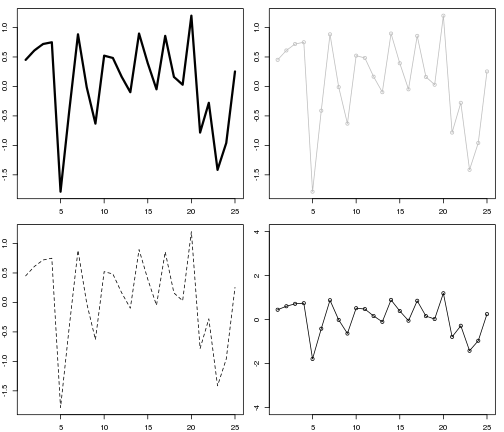
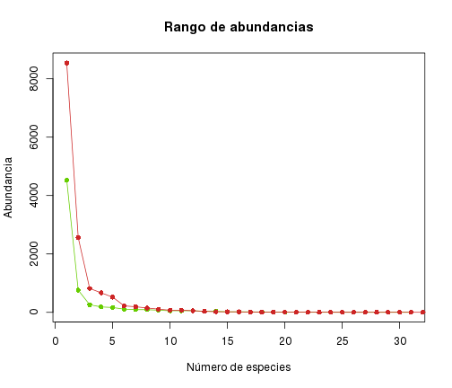
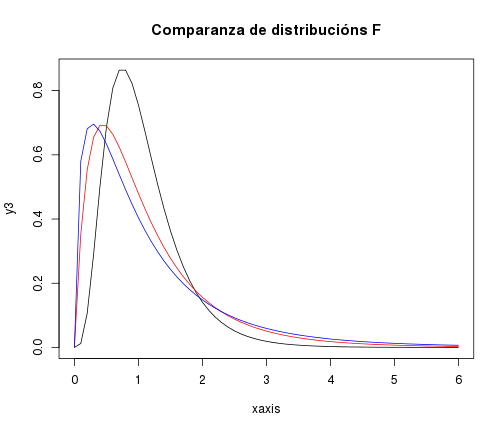

Introdución a R (para a estatística)
0. Introdución
Que é R?
R é unha linguaxe de programación con licenza aberta para a estatística computacional e o deseño de gráficos. O seu principal uso está na minería de datos e a análise estatística, como son os campo das ciencias exactas e naturais. R é un proxecto GNU desenvolvido principalmente nas linguaxes de programación C, Fortran e R e que se libera baixo a licenza libre GNU General Public License.
O desenvolvemento de R comenzárono Ross Isaka e Robert Gentleman, da Universidade de Auckland de Nova Zelandia, co obxectivo de solventar problemas, como os de deficiencia no uso de memoria, da linguaxe de programación S. Ademais de basearse en S, recolleron características semánticas de Scheme. Por lles insistir o suízo Martin Mächler, Ihaka e Gentleman liberaron o código de R no ano 1995. Pola facilidade de aprendizaxe e ser software libre, creouse rapidamente unha comunidade arredor da linguaxe. Así é que no 1997 créase o grupo grupo aberto de desenvolvemento R Development Core Team, o consorcio de desenvolvedores que mantén e promove o uso da linguaxe R, e liberase a última versión alfa da linguaxe. Dende 2013 está dispoñible a versión 3.0 de R.
Instalación
R-project.org e a páxina web da linguaxe R. Na súa sección de Download están tódalas formas de instalación detalladas.
Linux
En Linux dende o xestor de paquetes de cada distribución, como Synaptic en Ubuntu, Yast en OpenSUSE ou Yum en Fedora, podemos buscar o paquete de R. No caso onde non apareza na busca, debemos engadir o repositorio oportuno; e que está detallado para cada distribución en CRAN, onde se especifican tódolos repositorios e comandos para executar en cada distribución de Linux. Esencialmente, na liña de comandos a instalación procederá do seguinte xeito:
- en Ubuntu:
` sudo apt-get install r-base r-base-dev `
- en openSUSE:
` sudo zypper install R-patched R-patched-devel `
- en Fedora:
`yum install R `
E de xeito semellante para outras distribucións Linux.
Outros Sistemas Operativos
Para os outros casos de sistemas operativos privativos, a CRAN dános as seguintes ligazóns de descarga:
Interfaces gráficas
R é unha linguaxe de programación co que executándoa na súa liña de comandos ou cun editor de textos podemos facer uso dela.
Arestora, para o uso de R temos varias interfaces gráficas (GUI) dispoñibles, que esencialmente son interpretadores das liñas de comandos e que facilitan ver ou mostrar os gráficos e as páxinas de axuda. Sendo software libre o uso de R non está restrinxido ou limitado a ningunha IDE en concreto. É útil a escolla dunha IDE para cando facemos un uso habitual ou con obxecto de desenvolvemento por resaltar a sintaxe de R e polas facilidades de xestión de proxectos que nos facilitan.
Algunhas IDEs de R:
As bases de R
A túa primeira aplicación en R!
1 + 3 # aquí fago un comentario
# créase un vector v = 1,2,3 <- é o “comando de asignación”
g <- c(1, 3, 5)
# pedimos a variable 'g' nos mostre os seus valores
g
# o segundo elemento do vector
g[2]
# a resta do segundo elemento menos o primeiro
g[2] - g[1]
# créanse dous vectores w son tódolos número do 1 ó 12
w <- c(1:20)
# y é o logaritmo dun vector dunha secuencia de pi a 23*pi
y <- log(pi:23 * pi)
# fai un gráfico!
plot(w, y)
# crea unha distribución normal con media 2, desviación típica de 5
a <- rnorm(50, 2, 5)
# marca 3 gráficos en horizontal, 1 liña en horizontal
par(mfrow = c(1, 2))
# debuxamos un boxplot e un histograma
boxplot(a)
hist(a)
# volvemos a marcar un só gráfico en horizontal e vertical
par(mfrow = c(1, 1))
Axuda
Sempre que queiramos atopar unha solución a un problema, ou ver exemplos, podemos facer unha busca da axuda. Se quixeramos saber como se fai un gráfico, fariamos unha busca de plot de calquera destas maneiras:
?'plot'?"plot"??plot??'plot'
Na axuda, cada función de cada librería ten sempre a súa descrición, definidas as súas formas de uso, as variables que necesita e/ou pode empregar e exemplos.
Outra opción para buscar recursos de axuda é chamando directamente a función de axuda con help(nome_da_funcion). Como exemplo, para a función sum executaríamos help(sum).
A listaxe completa de opcións para facer unha busca na axuda é a seguinte:
help("median")help("*")help("if")help.search("plotting")help.search("regression model")
As funcións como ??'plot' e help("plot") só fan buscas nos paquetes que temos instalados. Porén, RSiteSearch("{Linear Model Fits}") busca, usando o navegador web, as palabras clave, viñetas ou tarefas no motor de buscas de http://search.r-project.org.
Cando se precisa ver un exemplo de uso dunha función emprégase example(max). Ademais diso, múltiples librerías traen consigo demostracións. Nese caso a función demo() permítenos ver todas esas mostras da función que hai dispoñíbles. Como exemplo, se podemos ver demo(histogram) e demo(package='mosaic')
Xestión de paquetes e scripts
O núcleo principal de R dispón de moitas funcionalidades, pero moitas funcións están implementadas en paquetes adicionais (librerías). Cando precisemos usalos, primeiro, teremos que facer unha instalación desas librerías e logo unha chamada ao paquete instalado.
Para unha instalación temos que realizar unha chamada a install.packages(), que será dicir install.packages("opaquetequequero", lib="/a/librería/onde/está/situado"). Polo xeral e se non estamos a facer unha chamada a unha librería local, podemos omitir "lib=" e a instalación farase dende a CRAN.
O comando library() fai unha chamada á librería que temos instalada para que estea 'activado'. require() é semellante a library(), xa que fai unha chamada á librería, mais está orientado a implementalo en funcións (ó programar) xa que informa dos erros mais non detén os procesos da función.
Se precisáramos a librería 'ggplot2', un gran recurso para gráficos, primeiro, fariamos a súa instalación con install.packages("ggplot2"), unha vez instalada, activámola con libary(ggplot2). Se elaborásemos unha nova función que use ggplot2, empregariamos preferiblemente require(ggplot2).
Nuns script pódemos ter codificados e almacenados moitas das nosas funcións ou o procesamento de datos que empregamos. Para importar un script só temos que indicar a fonte onde se atopa: source("/o/meu/scrip.R"). Para ver o script, faise unha chamada deste xeito: script.R.
A maiores, outras pezas que complementan a funcionalidade de R e que son interesantes é install.RStudio(), que instala directamente RStudio dende R, install.Rtools(), de obrigado uso para o desenvolvemento de paquetes en R. install.git(), que complementa control de versións en 'git'. En R mesmo podemos realizar a instalación dun paquete den desenvolvemento en 'github' deste xeito: install.packages("devtools"), library(devtools), dev_mode(on=T), install_github("ggplot2"), dev_mode(on=F).
O espazo de traballo
En R podemos definir o espazo no que imos a estar traballando, e con iso aforraremos en calquera uso de subdirectorios especificar a ruta completa. Defínese a raíz indicando: setwd("/home/eu/o/meu/cartafol").
No momento en que se queira saber en cal cartafol estamos, só precisamos indicar getwd(), que nos dá a dirección completa do cartafol raíz.
A función list.files() permítenos ver todo o listado de ficheiros que hai dentro do cartafol de traballo que se lle especificou a setwd().
1. A contorna de R
Sintaxe
Expresións
## [1] 3 4 5 6 7 8 9 10 11 12 13
Asignación de variables
Unha varíable asígnase usando "<-" ou =. Por motivos históricos, en R prefírese o uso de "<-".
## [1] 2 3 4 5 6 7 8 9 10
Esa asignación tanto pode ir nun sentido como noutro. print()
Ademais de valores numéricos, unha variable pode levar asociados valores lóxicos ou de caracteres.
Operadores matemáticos
Sobre das variables podemos aplicar cálculos e multitude de funcións xa implementadas. Primeiro hai que ter en conta como se concatenan os cálculos, xa que en R os cálculos aplícanse en cada elemento dun vector sen necesidade de aplicar un loop.
## [1] 2 4 6 8 10 7 9 11 13 15
# resta
c(10, 12, 14) - 3
# multiplicación
-1:3 * 2:6
## [1] 0.3183 0.6366 0.9549
# expoñentes, ^ e ** son o mesmo
identical(2^5, 2 * 4^2)
# división, só enteiros
1:12%/%3
## [1] 0 0 1 1 1 2 2 2 3 3 3 4
# restante das divisións
1:12%%3
## [1] 1 2 0 1 2 0 1 2 0 1 2 0
No anexo temos listado as principais función matemáticas de R. Aquí veremos exemplos dalgunhas das habituais, como as trigonométricas. Como se viu xa, non se traballa valor por valor senón en forma vectorial.
# exponenciais
exp(pi + 1) + 1
# logaritmos, a base natural é a usada en log()
log(100)
# funcións trigonométricas
sin(c(0, pi/2, pi))
## [1] 0.000e+00 1.000e+00 1.225e-16
# factoriais
factorial(9) - 1
# outras funcións
rep("Xo!", times = 5)
## [1] "Xo!" "Xo!" "Xo!" "Xo!" "Xo!"
Valores lóxicos
Moitas veces, como para a comparanza de valores enteiros, imos precisar de facer uso de valores lóxicos. Para iso emprégase:
| == |
igual a |
| != |
diferente de |
| < |
menor ca |
| <= |
menor ou igual ca |
# igual a...?
c(1, 2 - 1, 3) == 1
# diferente de...?
1:10 != 10:1
## [1] TRUE TRUE TRUE TRUE TRUE TRUE TRUE TRUE TRUE TRUE
# menor ca...?
log(2:pi^2)^pi >= pi^3
## [1] FALSE FALSE FALSE FALSE FALSE FALSE FALSE FALSE
Números especiais
R acepta valores numéricos particulares: -Inf, Inf, NA e NaN. Os valores infinitos non necesitan demasiada presentación, mais si os seguintes.
NaN é unha abreviatura de "not-a-number" e indica que ou ben un cálculo ou non ten sentido matemático ou non se puido realizar correctamente. NA, pola outra banda, indica que ese valor non está dispoñible ("not-available"); é un valor que falta.
c(NA + 1, NA * 2, NA + Inf)
1.2 Vectores
Un vector é unha cadea de números ou caracteres, isto é, secuencias numéricas ou lóxicas. Con iso, a un vector podémoslle asignar as medidas dunha única variable. Os vectores permítenos realizar as mesmas operacións matemáticas a ese vector cun só comando.
Hai varios xeitos de crear vectores. Para os vectores numéricos, : crean secuencias dun número a outro.
## [1] -20 -19 -18 -17 -16 -15 -14 -13 -12 -11 -10 -9 -8 -7 -6 -5 -4
## [18] -3 -2 -1 0 1 2 3 4 5 6 7 8 9 10
## [1] 1.2 2.2 3.2 4.2 5.2 6.2 7.2 8.2 9.2
c() concatena valores:
c(c(1, 2, 3), c(3, 2, 1))
Como vimos, "<-" permite almacenar valores nun vector. Con iso, os vectores pódense concaternar con outros vectores:
# Créanse vectores, asignándolle valores
u <- c(5:7)
v <- c(rep(1, 3))
# Concaténanse
(w <- c(u, v))
# só os elementos da primeira e terceira posición
w[c(1, 3)]
# todo agás o segundo e cuarto elemento o signo '-' denota que se retiran
w[-c(2, 4)]
# <- e = cumpren a mesma función
i <- c(TRUE, TRUE)
i = c(TRUE, TRUE)
Ademais de numéricos, os vectores poden ser de caracteres ou lóxicos. Os operadores para vectores lóxicos son:
p <- c("Rosalia", "Darwin", "Einstein")
q <- c(TRUE, FALSE, NA)
str(q)
## logi [1:3] TRUE FALSE NA
A función vector crea vectores dun tipo e tamaño determinado. Cada un deses valores levará asignado un cero, un 'FALSE' ou unha cadea en branco; isto é, o equivalente a nada.
## [1] 0+0i 0+0i 0+0i 0+0i 0+0i
## [1] FALSE FALSE FALSE FALSE FALSE
## [[1]]
## NULL
##
## [[2]]
## NULL
##
## [[3]]
## NULL
##
## [[4]]
## NULL
##
## [[5]]
## NULL
ou feito doutro xeito:
## [1] 0+0i 0+0i 0+0i 0+0i 0+0i
## [1] FALSE FALSE FALSE FALSE FALSE
Secuencias
Non só co : podemos crear secuencias de valores. Función como seq() permiten crear secuencias de diferentes xeitos. seq.int() crea secuencias dun número a outro, ao igual que : o fai, mais podendo especificar a diferenza entre un valor e outro.
## [1] 12 13 14 15 16 17 18
Con seq_len() defínense secuencias de 1 ata o valor de entrada.
## [1] 1 2 3 4 5 6 7 8 9 10
## [1] 12 13 14 15 16 17 18
Longura
Tódolos vectores teñen unha lonxitude, e iso dinos o número de elementos que teñen. Os valores de lonxitude dun vector serán sempre positivos e os valores NA e NaN incluiranse no seu valor.
length(c(TRUE, TRUE, FALSE, NA))
a <- c("a", "z", "m")
length(a)
Asignación de nomes
c(comarcas = 3, poboacion = 10000)
## comarcas poboacion
## 3 10000
comarcas <- 1:4
names(comarcas) <- c("Ordes", "As Mariñas", "Bergantiños", "Terra de Trives")
names(comarcas)
## [1] "Ordes" "As Mariñas" "Bergantiños" "Terra de Trives"
Uso dos vectores
Os cálculos en R, digamos, están 'vectorizados'. Cando se aplica o log(i) créase un vector cos logaritmos naturais dos elementos de i. Se p e q son vectores da mesma lonxitude, p + q é un vector cos elementos iguais á suma de cada elemento de p e q por orde. Mais, se q é un escalar, súmaselle a cada elemento de p. E se un dos vectores é máis pequeno ca outro, o máis curto reciclarase, engadíndollo ao máis grande tantas veces coma fora preciso.
A cantidade de elementos dun vector obtémolos en función da súa longura usando length(i). Cada elemento dun vector pódese obter con subíndices dentro de [ ], co que con i[1] obtemos o primeiro elemento, con i[2] o segundo e x[length(x)] o último de todos.
Os subíndices poden ser tamén un vector por si mesmos, co que, por exemplo, i[1:5] son os primeiros cinco elementos do vector i. Doutro xeito, un subíndice negativo exclúe o correspondente elemento con ese índice, co que i[-1] devolve o vector con tódolos elementos de i agás o primeiro.
Un subíndice pode ser expresión lóxicas. Nese caso obtemos sempre os elementos que sexan verdadeiros para esa expresión. Con iso, podemos obter valores "i nos que i sexa maior ca 5".
x <- c(1, 1, 4, 5, 7, 10)
x[x < 5]
## [1] TRUE TRUE TRUE FALSE FALSE FALSE
Ademais de numéricos, os vectores poden ser lóxicos. Neste caso, os operadores lóxicos "para", |, e "e", & funcionan para cada elemento do vector do mesmo xeito. No caso de R, o operador dobre ||, "ou", e &&, "e", serven só para a comparanza do primeiro elemento do vector.
p <- c(TRUE, TRUE, FALSE, FALSE)
q <- c(TRUE, FALSE, TRUE, FALSE)
p & q
## [1] TRUE FALSE FALSE FALSE
Varias funcións permítennos saber as características dun vector, obter os seus índices ou comparalos:
z <- c(5, -1, 7, 71, 83)
z <= 3 # FALSE TRUE FALSE FALSE FALSE (para cada elemento de z)
## [1] FALSE TRUE FALSE FALSE FALSE
!(z < 3) # TRUE FALSE TRUE TRUE TRUE
## [1] TRUE FALSE TRUE TRUE TRUE
z[z != 3] # 5 -1 7 71 83, os elementos de z para os que se cumpre esa condición (é TRUE)
which(z >= 4) # 4 5, os índices dos elementos para os cales z cumpre esa condición
is.na(z) # FALSE FALSE FALSE FALSE FALSE
## [1] FALSE FALSE FALSE FALSE FALSE
1.3 Matrices e arrays
As variables vectores son obxectos unidimensionais: só teñen unha longura e ningunha outra dimensión. En cambios, os arrays e as matrices son multidimensionais. Un array contén datos multidimensionais rectangulares, isto é, cada fila ou cada columna é da mesma longura cás outras. As matrices son un caso particular de arrays bidimensionais.
Para crear un array chámase á función array sobre dun vector de valores e especificando as dimensións. A cada dimensión pódeselle asignar un nome.
arrayN <- array(1:24, dim = c(4, 3, 2), dimnames = list(c("un", "dous", "tres",
"catro"), c("a", "b", "c"), c("alpha", "beta")))
Coas matrices non precisamos indicar un argumento dim, mais si de especificarmos o número de filas e columnas que a matriz ha de ter.
matrizN <- matrix(1:12, nrow = 4, dimnames = list(c("un", "dous", "tres", "catro"),
c("alpha", "beta", "gamma")))
Aparte disto, temos outros xeitos de crear matrices. Como se viu, unha matriz é un vector que sempre ten un atributo de dimensións (dim) igual a 2, que son o número de columnas e filas. A función matrix é a que crea unha matriz. A opción byrow é a que indica se os valores de datos que se lle asignan á matriz son columnas sucesivas (o predefinido) ou por filas (byrow=TRUE). A opción dimnames asígnalle nomes ás columnas e filas.
## [,1] [,2] [,3]
## [1,] 1 3 5
## [2,] 2 4 6
matrix(data = 5, nrow = 2, ncol = 2)
## [,1] [,2]
## [1,] 5 5
## [2,] 5 5
matrix(data = c(1:4), nrow = 2, ncol = 2, byrow = FALSE)
## [,1] [,2]
## [1,] 1 3
## [2,] 2 4
matrix(data = c(1:4), nrow = 2, ncol = 2, byrow = TRUE)
## [,1] [,2]
## [1,] 1 2
## [2,] 3 4
Outro xeito de crear matrices é darlles a un vector os valores ao atributo de dimensións dim, que de primeiras para un vector é nulo.
## [1] 1 2 3 4 5 6 7 8 9 10 11 12
## [,1] [,2] [,3] [,4]
## [1,] 1 4 7 10
## [2,] 2 5 8 11
## [3,] 3 6 9 12
A función dim, tanto para matrices como arrays, ofrece as dimensións da variable. Mesmo podemos cambiarlle a unha matrix ou a un array as súas dimensións grazas a dim.
m1 <- matrix(1:6, nrow = 2, ncol = 3)
m1
## [,1] [,2] [,3]
## [1,] 1 3 5
## [2,] 2 4 6
## [,1] [,2]
## [1,] 1 4
## [2,] 2 5
## [3,] 3 6
As filas e columnas das matrices poden ter nomes asignados. rownames, colnames son os elemetos que nos permiten obtelos ou modificalos.
## [1] "un" "dous" "tres" "catro"
## [1] "alpha" "beta" "gamma"
## [[1]]
## [1] "un" "dous" "tres" "catro"
##
## [[2]]
## [1] "alpha" "beta" "gamma"
colnames(matrizN) <- c("delta", "epsilon", "zeta")
colnames(matrizN)
## [1] "delta" "epsilon" "zeta"
O indexado nas matrices e arrays funciona de igual xeito ca cos vectores, só que precisamos indicar todas as dimensións. Grazas ao indexado podemos un subconxunto de datos e crear novas matrices.
# primeira fila
matrizN[1, ]
## delta epsilon zeta
## 1 5 9
## delta epsilon zeta
## 1 5 9
# segunda fila e segunda e terceira columna
matrizN[2, c("delta", "epsilon")]
# da segunda á cuarta fila, primeira e segunda columna
matrizN[2:4, c("delta", "zeta")]
## delta zeta
## dous 2 10
## tres 3 11
## catro 4 12
# con ese subset creamos unha nova matriz
matrizM <- matrizN[2:4, c("delta", "zeta")]
dim(matrizN)
Así como podemos realizar subsets de matrices (definido columnas e filas a escoller), podemos xunguir matrices. rbind e cbind permítennos xunguir matrices segundo as súas filas ou segundo as súas columnas.
m2 <- matrix(seq.int(2, 24, 2), nrow = 4)
m3 <- matrix(1:9, ncol = 3)
# por filas
rbind(m2, m3)
## [,1] [,2] [,3]
## [1,] 2 10 18
## [2,] 4 12 20
## [3,] 6 14 22
## [4,] 8 16 24
## [5,] 1 4 7
## [6,] 2 5 8
## [7,] 3 6 9
# por columnas
cbind(m2[1:3, ], m3)
## [,1] [,2] [,3] [,4] [,5] [,6]
## [1,] 2 10 18 1 4 7
## [2,] 4 12 20 2 5 8
## [3,] 6 14 22 3 6 9
Os operadores aritméticos habituais (+, -, \*, /) traballan sobre dunha matriz e arrays tal e como o fan en vectores. Sempre que se apliquen cálculos aritméticos en matrices e arrays estes teñen que ser do tamaño axeitado. Por exemplo, cando se aplica unha multiplicación os números de filas da primeira matriz teñen que ser as mesmas ca o número de columnas da segunda matriz.
Unha suma dun vector a un array ou matrix supón que o vector se reciclará tantas veces como se precise, máis a dimensión final resultante é a do array ou matriz.
m4 <- matrix(1:6, ncol = 2, nrow = 3)
m5 <- matrix(data = 2, ncol = 2, nrow = 3)
m4 + m5
## [,1] [,2]
## [1,] 3 6
## [2,] 4 7
## [3,] 5 8
## [,1] [,2]
## [1,] 0.5 2.0
## [2,] 1.0 2.5
## [3,] 1.5 3.0
A función t() realiza unha transposición dunha matriz. A transposición non é aplicable a arrays de maiores dimensións ca unha matriz.
## [,1] [,2]
## [1,] 1 4
## [2,] 2 5
## [3,] 3 6
## [,1] [,2] [,3]
## [1,] 1 2 3
## [2,] 4 5 6
O operando ^ traballa elemento por elemento
m6 <- matrix(c(4, 0, 4, 3, -3, 1, 2, 5, 9), nrow = 3)
m6^2
## [,1] [,2] [,3]
## [1,] 16 9 4
## [2,] 0 9 25
## [3,] 16 1 81
## [,1] [,2] [,3]
## [1,] 0.25 0.3333 0.5000
## [2,] Inf -0.3333 0.2000
## [3,] 0.25 1.0000 0.1111
# para iso aplícase solve()
(im6 <- solve(m6))
## [,1] [,2] [,3]
## [1,] 0.7273 0.5682 -0.4773
## [2,] -0.4545 -0.6364 0.4545
## [3,] -0.2727 -0.1818 0.2727
## [,1] [,2] [,3]
## [1,] 1.000e+00 1.665e-16 0
## [2,] 0.000e+00 1.000e+00 0
## [3,] 4.441e-16 4.441e-16 1
1.4 Listas e Data frames
Os vectores, as matrices e os arrays conteñen sempre elementos que son do mesmo tipo. Pola contra, as listas e das data frames son dous tipos de obxectos que permiten combinar diferentes tipos de datos nunha única variable.
Listas
As listas son elementos semellantes a un vector onde cada un deses elementos pode ser de diferente tipo.
A función list() é a que crea as listas e coa que se pode especificar o contido destas, dun xeito similar a c(). Os elementos dunha lista poden ser variables de calquera tipo: dende vectores, a matrices ou incluso funcións.
list.sp <- list(c("Asteromphalus", "Cerataulina", "Rhizosolenia", "Gyrodinium",
"Phalacroma", "Prorocentrum"), c(21, 12, 9, 5, 1, 1), matrix(c(1, 1, 1,
0, 1, 0, 0, 0, 1, 1, 0, 0, 1, 0, 1, 1, 1, 1), nrow = 3))
Unha vez creada, pódense definir os nomes de cada elemento da lista.
names(list.sp) <- c("specie", "abundance", "presence")
list.sp
## $specie
## [1] "Asteromphalus" "Cerataulina" "Rhizosolenia" "Gyrodinium"
## [5] "Phalacroma" "Prorocentrum"
##
## $abundance
## [1] 21 12 9 5 1 1
##
## $presence
## [,1] [,2] [,3] [,4] [,5] [,6]
## [1,] 1 0 0 1 1 1
## [2,] 1 1 0 0 0 1
## [3,] 1 0 1 0 1 1
No canto de asignar os nomes despois de crear a lista, pódense definir xa ó creala.
list.sp <- list(species = c("Asteromphalus", "Cerataulina", "Rhizosolenia",
"Gyrodinium", "Phalacroma", "Prorocentrum"), abundance = c(21, 12, 9, 5,
1, 1), presence = matrix(c(1, 1, 1, 0, 1, 0, 0, 0, 1, 1, 0, 0, 1, 0, 1,
1, 1, 1), nrow = 3))
Porén, como unha lista pode conter datos de diferentes tipos, o xeito de traballar con elas é diferente a vectores.
O indexado nas listas funciona deste xeito:
# obtemos os dous primeiros elementos da lista
list.sp[1:2]
## $species
## [1] "Asteromphalus" "Cerataulina" "Rhizosolenia" "Gyrodinium"
## [5] "Phalacroma" "Prorocentrum"
##
## $abundance
## [1] 21 12 9 5 1 1
# retiramos o primeiro elemento da lista
list.sp[-1]
## $abundance
## [1] 21 12 9 5 1 1
##
## $presence
## [,1] [,2] [,3] [,4] [,5] [,6]
## [1,] 1 0 0 1 1 1
## [2,] 1 1 0 0 0 1
## [3,] 1 0 1 0 1 1
# obtemos o primeiro e terceiro
list.sp[c("specie", "presence")]
## $
## NULL
##
## $presence
## [,1] [,2] [,3] [,4] [,5] [,6]
## [1,] 1 0 0 1 1 1
## [2,] 1 1 0 0 0 1
## [3,] 1 0 1 0 1 1
list.sp[c(TRUE, FALSE, TRUE)]
## $species
## [1] "Asteromphalus" "Cerataulina" "Rhizosolenia" "Gyrodinium"
## [5] "Phalacroma" "Prorocentrum"
##
## $presence
## [,1] [,2] [,3] [,4] [,5] [,6]
## [1,] 1 0 0 1 1 1
## [2,] 1 1 0 0 0 1
## [3,] 1 0 1 0 1 1
Feito deses xeitos realmente obtemos outras listas. Pero para acceder aos contidos da lista os operadores que se empregan son [[ ]].
Para acceder a un valor dun elemento empréganse os [[ ]] e [].
list.sp[["abundance"]][3]
Sempre se pode extraer dunha lista valores e gardalos nun vector.
abundancia <- as.numeric(list.sp[[2]])
is.vector(abundancia)
Data frames
Os conxuntos de datos, ou as data frames, son estruturas de datos bidimentionais que xunguen en si diferentes tipos de datos. Son como se fosen "follas de datos".
Os datos dunha mesma columna son obrigatoriamente do mesmo tipo, isto é; ou cuantitativos ou categóricos, mais nunca ambos. A cada columna e a cada fila nunha data frame pódeselle asignar unha etiqueta. Logo, unha columna pódese obter cunha chamada usando with() ou a expresión $.
Como nalgún exemplo visto anteriormente, data.frame() é o que nos permite crear conxuntos de datos.
secuencias <- data.frame(SNP = c(2, 3, 7), ac.nucleico = c("G", "C", "T"))
secuencias
## SNP ac.nucleico
## 1 2 G
## 2 3 C
## 3 7 T
# $ permítenos obter unha variable
secuencias$ac.nucleico
## [1] G C T
## Levels: C G T
Os nomes das variables dunha data frame pódense obter ou cambiar a posteriori.
r <- data.frame(x = 2, y = 4:5, z = 5:8)
r
## x y z
## 1 2 4 5
## 2 2 5 6
## 3 2 4 7
## 4 2 5 8
colnames(r) <- c("a", "b", "c")
r
## a b c
## 1 2 4 5
## 2 2 5 6
## 3 2 4 7
## 4 2 5 8
O indexado nas data frames pódese realizar de varios xeitos. Habitualmente realízase coas parellas dos índices de filas e columnas.
# segunda e terceira fila, primeira e segunda columna
r[2:3, 1:2]
r[c(TRUE, TRUE, FALSE, TRUE), c("a", "b")]
## a b
## 1 2 4
## 2 2 5
## 4 2 5
# se só precisamos unha columna
r$b[2:4]
Nos momentos en que precisemos obter un subconxunto dos datos, a función subset() será de axuda. subset() precisa de tres variables: a data frame da que extraer datos, un vector lóxico de condicións para as filas a incluír e o nome das columnas coas que nos quedamos.
# convertimos parte da lista nun conxunto de datos
presenza <- list.sp$presence
# asígnanselle nomes ás filas e columnas
colnames(presenza) <- c("sp1", "sp2", "sp3", "sp4", "sp5", "sp6")
rownames(presenza) <- c("vigo", "muros", "muxia")
# invertimos os datos
presenza <- t(presenza)
presenza <- as.data.frame(presenza)
presenza
## vigo muros muxia
## sp1 1 1 1
## sp2 0 1 0
## sp3 0 0 1
## sp4 1 0 0
## sp5 1 0 1
## sp6 1 1 1
# subset que especies presentes en Muros están en Vigo e Muxía
subset(presenza, muros > 0 | muxia, vigo)
## vigo
## sp1 1
## sp2 0
## sp3 0
## sp5 1
## sp6 1
1.5 Factores
Ao analizarmos datos, atoparanse de xeito habitual valores categóricos, como poden ser a cor de ollos ou a orde á que pertence unha especie. Un factor é unha variable especial para almacenar variables categóricas. Os factores son unha colección de elementos, e que poden ser mesmo ordenados, no que os diferentes valores do factor se poden chamar "niveis" (levels).
factor() é a función a empregarmos para definir un factor.
# Poderiamos ter un vector de observacións, mais...
radiolaria <- c("Spumellaria", "Sticholonche", "Arthracanthida", "Arthracanthida",
"Sticholonche")
# É mellor crear factores
radiolaria <- factor(c("Spumellaria", "Arthracanthida", "Sticholonche"))
# tódalas obsevacións
radiolaria
## [1] Spumellaria Arthracanthida Sticholonche
## Levels: Arthracanthida Spumellaria Sticholonche
# os niveis das observacións
levels(radiolaria)
## [1] "Arthracanthida" "Spumellaria" "Sticholonche"
# o número de niveis
nlevels(radiolaria)
Pódense crear factores que poidamos analizar por orde, algo útil como neste exemplo de análise de frecuencia de especies:
sp.reconto <- factor(c("Abundante", "Abundante", "Abundante", "Habitual", "Habitual",
"Habitual", "Rara", "Moi rara"), levels = c("Abundante", "Habitual", "Rara",
"Moi rara"), order = TRUE)
sp.reconto
## [1] Abundante Abundante Abundante Habitual Habitual Habitual Rara
## [8] Moi rara
## Levels: Abundante < Habitual < Rara < Moi rara
## [1] "ordered" "factor"
## [1] 1 1 1 2 2 2 3 4
## attr(,"levels")
## [1] "Abundante" "Habitual" "Rara" "Moi rara"
Cando se crea un conxunto de datos (data frame) cunha columna de datos de "texto", R asume por defecto que ese texto son datos categóricos e defíneos como factores.
abundancia <- data.frame(abundancia = c(110, 92, 87, 86, 85, 85, 12, 3, 2, 1,
1, 1), specie = c("Aulacoctena", "Aulacoctena", "Lampea", "Lampea", "Lampea",
"Ceroctena", "Ceroctena", "Ceroctena", "Aulacoctena", "Lampea", "Lampea",
"Ceroctena"))
abundancia
## abundancia specie
## 1 110 Aulacoctena
## 2 92 Aulacoctena
## 3 87 Lampea
## 4 86 Lampea
## 5 85 Lampea
## 6 85 Ceroctena
## 7 12 Ceroctena
## 8 3 Ceroctena
## 9 2 Aulacoctena
## 10 1 Lampea
## 11 1 Lampea
## 12 1 Ceroctena
# Tipo de clase da variable
class(abundancia$specie)
# Levels lista os niveis do factor
abundancia$specie
## [1] Aulacoctena Aulacoctena Lampea Lampea Lampea
## [6] Ceroctena Ceroctena Ceroctena Aulacoctena Lampea
## [11] Lampea Ceroctena
## Levels: Aulacoctena Ceroctena Lampea
En calquera momento podemos ver os niveis dunha variable do tipo factorial e mudar a asignación para calquera dato recollido nunha táboa de datos.
# Ver os niveis dunha variable
levels(abundancia$specie)
## [1] "Aulacoctena" "Ceroctena" "Lampea"
# Mudar o factor asignado a unha observación
abundancia$specie[2] <- "Lampea"
Igualmente, pódeselle aplicar a un obxecto xa creado previamente factor() e con iso definilo como factor.
species <- c("Aulacoctena", "Aulacoctena", "Lampea", "Lampea", "Lampea", "Ceroctena",
"Ceroctena", "Ceroctena", "Aulacoctena", "Lampea", "Lampea", "Ceroctena")
species <- factor(species)
class(species)
Con subset() podemos seleccionar datos e mesmo retirar factores que non precisamos.
# un subconxunto cunha variable numérica
subset(abundancia, abundancia != 1)
## abundancia specie
## 1 110 Aulacoctena
## 2 92 Lampea
## 3 87 Lampea
## 4 86 Lampea
## 5 85 Lampea
## 6 85 Ceroctena
## 7 12 Ceroctena
## 8 3 Ceroctena
## 9 2 Aulacoctena
# subconxunto en base ó facor especie
abundancia2 <- subset(abundancia, specie == "Ceroctena" | specie == "Lampea")
# mais que sigue tendo tres niveis
unique(abundancia2$specie)
## [1] Lampea Ceroctena
## Levels: Aulacoctena Ceroctena Lampea
# retirada de niveis
abundancia2$specie <- droplevels(abundancia2$specie)
levels(abundancia2$specie)
## [1] "Ceroctena" "Lampea"
1.6 Funcións útiles
En moitos momentos precisamos de estudar a estrutura dun obxecto antes de aplicar ningunha operación sobre del. A súa estrutura, clase ou nome de variables son características que se precisan.
i <- 3:8
# longura ou número de elementos ou compoñentes
length(i)
# estrutura dun obxecto
str(i)
# clase ou tipo de obxecto
class(i)
Saber que obxectos temos no espazo de traballo e eliminalos é outra tarefa habitual.
## [1] "a" "abundancia" "abundancia2" "arrayN" "comarcas"
## [6] "d" "g" "i" "im6" "list.sp"
## [11] "m1" "m2" "m3" "m4" "m5"
## [16] "m6" "matrizM" "matrizN" "p" "presenza"
## [21] "q" "r" "radiolaria" "secuencias" "sp.reconto"
## [26] "species" "u" "v" "w" "x"
## [31] "y" "z"
## [1] "a" "abundancia" "abundancia2" "arrayN" "comarcas"
## [6] "d" "g" "i" "im6" "list.sp"
## [11] "m1" "m2" "m3" "m4" "m5"
## [16] "m6" "matrizM" "matrizN" "p" "presenza"
## [21] "q" "r" "radiolaria" "secuencias" "sp.reconto"
## [26] "species" "u" "v" "w" "x"
## [31] "y" "z"
# eliminamos a data frame de abundancia
rm(abundancia)
ls()
## [1] "a" "abundancia2" "arrayN" "comarcas" "d"
## [6] "g" "i" "im6" "list.sp" "m1"
## [11] "m2" "m3" "m4" "m5" "m6"
## [16] "matrizM" "matrizN" "p" "presenza" "q"
## [21] "r" "radiolaria" "secuencias" "sp.reconto" "species"
## [26] "u" "v" "w" "x" "y"
## [31] "z"
2. Xestión de datos
Datos de librerías
R trae a canda si máis de 100 conxuntos de datos. Ademais, moitas ou case tódalas librerías inclúen a canda si conxunto de datos. Nese cato, para o seu uso, a función a empregar é data().
# instalación e/ou carga dunha librería
if (!require(SPECIES)) {
install.packages("SPECIES")
}
## Loading required package: SPECIES
# chamada ós datos desa librería
data(butterfly)
# olléase o cabeceiro dos datos
head(butterfly)
## j n_j
## 1 1 118
## 2 2 74
## 3 3 44
## 4 4 24
## 5 5 29
## 6 6 22
# e a estrutura dos datos
str(butterfly)
## 'data.frame': 25 obs. of 2 variables:
## $ j : int 1 2 3 4 5 6 7 8 9 10 ...
## $ n_j: int 118 74 44 24 29 22 20 19 20 15 ...
bt <- butterfly
# obtense un resumo estatístico
summary(bt)
## j n_j
## Min. : 1 Min. : 3.0
## 1st Qu.: 7 1st Qu.: 9.0
## Median :13 Median : 12.0
## Mean :13 Mean : 24.8
## 3rd Qu.:19 3rd Qu.: 22.0
## Max. :25 Max. :119.0
Unha vez que teñamos os datos cargados, podemos traballar na súa análise.
## [1] 118 148 132 96 145 132 140 152 180 150 132 168 78 168
## [15] 90 144 153 108 190 200 231 110 69 72 2975
E rematado, eliminalos do espazo de traballo.
remove(butterfly)
# outro xeito: rm(butterfly)
Cando queiramos eliminar tódalas variables e obxectos dun espazo de traballo, podemos recorrer a eliminar con rm() tódolos os obxectos que ls() nos indica que están en uso.
rm(list = ls())
rm(list = ls(all = TRUE))
Importación e exportación de datos
Hai multitude de formatos e estándares de documentos de texto para o almacenamento de datos. Algúns dos habituais e que podemos empregar en R son os datos delimitados por espazos (CSV), os de eXtensible Markup Language (XML), os de JavaScript Object Notation (JSON), entre outros.
A lectura dos ficheiros "csv" realízase con read.csv().
# Importación de datos descarga desde
# https://github.com/mglbranco/introducion_a_R/blob/gh-pages/data/distral.csv
distral <- read.csv("~/public_html/introducion_a_R/data/distral.csv", sep = ",")
head(distral)
## spp individuals phylum nutrition
## 1 Asterionellopsis_glacialis 93 Heterokontophyta Autotroph
## 2 Asteromphalus_sp 5 Heterokontophyta Autotroph
## 3 Cerataulina_pelagica 56 Heterokontophyta Autotroph
## 4 Chaetoceros_curvisetus 74 Heterokontophyta Autotroph
## 5 Chaetoceros_debilis 167 Heterokontophyta Autotroph
## 6 Dactyliosolen_fragilissimus 56 Heterokontophyta Autotroph
## month
## 1 February
## 2 February
## 3 February
## 4 February
## 5 February
## 6 February
## 'data.frame': 78 obs. of 5 variables:
## $ spp : Factor w/ 64 levels "Amphidinium_flagellans",..: 3 4 5 9 10 16 21 22 33 39 ...
## $ individuals: int 93 5 56 74 167 56 4529 93 2 1 ...
## $ phylum : Factor w/ 5 levels "Ciliophora","Dinoflagellata",..: 5 5 5 5 5 5 5 5 5 5 ...
## $ nutrition : Factor w/ 2 levels "Autotroph","Heterotroph": 1 1 1 1 1 1 1 1 1 1 ...
## $ month : Factor w/ 2 levels "February","July": 1 1 1 1 1 1 1 1 1 1 ...
read.csv() emprégase para ficheiros con decimais marcados co "." e columnas separadas por ",". read.csv2() para os que teñan decimais en "," e separadores con ";". read.table emprégase para a importación de datos directamente de formatos de Excel (uso non aconsellado). read.delim() úsase cando as limitacións no ".csv" é por tabulación.
Pódense exportar datos usando write.csv(i, file="ficheiro.csv").
3. Gráficos
Plot
O sistema de representación gráfica básico traballa primeiro definindo a área de debuxo e logo engadindo elementos nesta. A orde principal é plot() e que precisa das coordenadas x e y. Cando só definimos un vector, plot() interpreta eses valores como do eixo y e o x constrúeo cos índices deses valores.
x <- 1:10
y <- 1/log2(1:10)
plot(x, y)
Os puntos de conexión dun gráfico defínense coas seguintes variables de type:
- p: puntos
- l: liñas
- b: puntos conectados por liñas segmentadas
- c: conecta os segmentos de b
- o: puntos sobre liñas
- h: histograma
- s: escaleirado
- S: outro escaleirado
- n: nada
par(mfrow = c(1, 2))
plot(x, y, type = "l")
plot(x, y, type = "h")
pch define a forma do punto de cada gráfico e lty o tipo de liña. mfrow() permite definir a distribución fila por fila de gráficos nun espazo rectangular.
# defínese cantos gráficos por fila
par(mfrow = c(2, 2), mar = c(2, 2, 1, 1), cex = 0.6)
# representación de dous gráficos
y <- rnorm(25)
plot(y, type = "l", lwd = 3)
plot(y, type = "o", col = "grey")
plot(y, type = "l", lty = "dashed")
plot(y, type = "o", ylim = c(-4, 4))

par(mfrow = c(2, 2), cex = 0.8, mar = c(4, 4, 1, 1))
y <- rnorm(25)
plot(y, type = "p")
plot(y, type = "l")
plot(y, type = "b")
plot(y, type = "h")
# mellorado orde decrecente da abundancia so especies con máis de 10
# individuos
plot(sort(distral[distral$individuals > 10, ]$individuals, decreasing = TRUE),
pch = 16, type = "o", col = "chartreuse3", xlab = "Número de especies",
ylab = "Abundancia", ylim = c(10, max(distral$individuals)), main = "Rango de abundancias")
# mellorado orde decrecente da abundancia so especies con máis de 10
# individuos
plot(sort(distral[distral$individuals > 10, ]$individuals, decreasing = TRUE),
pch = 16, type = "o", col = "chartreuse3", xlab = "Número de especies",
ylab = "Abundancia", ylim = c(10, max(distral$individuals)), main = "Rango de abundancias")
# representación dos datos de febreiro
plot(sort(distral[distral$month == "February", ]$individuals, decreasing = TRUE),
pch = 16, type = "o", col = "chartreuse3", xlab = "Número de especies",
ylab = "Abundancia", ylim = c(10, max(distral$individuals)), main = "Rango de abundancias")
# superposición dos datos de xullo
lines(sort(distral[distral$month == "July", ]$individuals, decreasing = TRUE),
pch = 16, type = "o", col = "firebrick3", xlab = "Número de especies",
ylab = "Abundancia", ylim = c(10, max(distral$individuals)), main = "Rango de abundancias")

Histogramas
hist() xera histogramas. Nestas pódese controlar as barras e o seu ancho co argumento de "breaks", que define o número de barras neste.
diato <- rnorm(n = 1000, m = 24.2, sd = 2.2)
hist.i <- hist(diato)
## $breaks
## [1] 16 17 18 19 20 21 22 23 24 25 26 27 28 29 30 31 32
##
## $counts
## [1] 1 0 9 15 55 85 106 175 196 163 100 48 28 14 4 1
##
## $density
## [1] 0.001 0.000 0.009 0.015 0.055 0.085 0.106 0.175 0.196 0.163 0.100
## [12] 0.048 0.028 0.014 0.004 0.001
##
## $mids
## [1] 16.5 17.5 18.5 19.5 20.5 21.5 22.5 23.5 24.5 25.5 26.5 27.5 28.5 29.5
## [15] 30.5 31.5
##
## $xname
## [1] "diato"
##
## $equidist
## [1] TRUE
##
## attr(,"class")
## [1] "histogram"
par(mfrow = c(1, 2))
hist(diato, breaks = 20, main = "Saltos=20")
hist(diato, breaks = 5, main = "Saltos=5")
A variable frec define histogramas de frecuencia ou de densidade.
hist(diato, freq = FALSE, main = "Gráfico de densidades")
No seguinte exemplo vemos un exemplo no que sobrepoñemos unha curva normal con curve() facendo uso de Zadd=TRUE.
hist(diato, freq = FALSE, xlab = "Rango de tamaños", main = "Distribución do rango de tamaños",
col = "chartreuse3", xlim = c(15, 35), ylim = c(0, 0.2))
# dnorm dá a densidade dunha curva normal a desviación estándar e a media
# obtéñense dos datos sobre dos que superpoñemos a curva
curve(dnorm(x, mean = mean(diato), sd = sd(diato)), add = TRUE, col = "blue4",
lwd = 2)
Os diagramas de barras créanse coa función barplot(). A función precisa que lle indiquemos un vector ou unha matriz, e o seu peso determinará o longo das barras no gráfico.
pesca.baixura <- matrix(c(752, 1438, 478, 252, 46, 26, 68, 31, 279, 366, 116,
77), nrow = 3, byrow = T)
colnames(pesca.baixura) <- c("0", "1-150", "151-300", ">300")
rownames(pesca.baixura) <- c("Camariñas", "Burela", "A Guarda")
barplot(pesca.baixura)
barplot(pesca.baixura, beside = T)
barplot(t(pesca.baixura), beside = T)
abline() engade liñas rectas, que podemos empregar para marcar lindes que nos interesen.
choiva <- c(227, 107.1, 205.7, 88.6, 93.8, 41.9, 13.3, 15.6, 39.7, 182.7, 83.7,
127)
meses <- c("Xan", "Feb", "Mar", "Abr", "Mai", "Xuñ", "Xul", "Ago", "Sep", "Out",
"Nov", "Dec")
# asignanselle nomes ao vector choiva
names(choiva) <- meses
# gráfico de barras
barplot(choiva, xlab = "Meses", ylab = "Choiva (L/m2)", ylim = c(0, 230), col = "lightblue3",
main = "Mabegondo, 2013")
# liñas horizontas especificadas pola secuencia
abline(h = seq(1, 220, 60), lty = 2, lwd = 0.5, col = "gray40")
# péchase a caixa do gráfico
box()
Diagramas de caixas
Os diagramas de caixas ('boxplot') pódense crear para variables individuais ou para grupos de variables. Nese último caso o código a empregarmos é boxplot(i, data=), onde i é unha fórmula e data os datos que conteñen as variables de interese.
boxplot(rnorm(50), rnorm(100), rlnorm(100))
x <- c(1, 2, 3, 4, 4, 6, 6, 8, 9, 9, 16, 27)
y <- c(5, 8, 8, 7, 8, 10, 1, 1, 12, 23, 44, 78)
z <- c(12, 12, 15, 17, 19, 26, 29, 31, 52, 80)
boxplot(x, y, z, horizontal = TRUE, names = c("Mes 1", "Mes 2", "Mes 3"), col = c("darkblue",
"gold1", "greenyellow"), xlab = "Produción", main = "Produción nas bateas")
4. Análise estatística
Distribucións estatísticas
Distribución normal
## [1] 0.809153 0.600712 1.220205 0.310755 0.047326 -0.702892 0.176055
## [8] 0.741847 -0.076015 1.426133 0.545831 -0.073203 -0.953654 -0.630386
## [15] -0.038710 1.138054 0.454051 0.893098 -0.877340 1.582489 -0.392878
## [22] -1.456177 0.370424 0.512083 -1.277891 0.140972 0.081519 0.280823
## [29] -1.180354 0.100727 -0.528619 1.447812 1.117347 0.690674 0.449098
## [36] 0.872775 -0.493068 0.702167 -1.999960 0.548068 -0.775350 -1.312899
## [43] -0.597564 0.373179 -0.463557 0.005934 -0.220679 0.179152 1.262621
## [50] 0.816791 0.408515 -0.118186 0.418464 -1.732231 1.015037 1.057663
## [57] -1.322829 -1.022392 0.674638 -0.220697 0.737680 -1.199624 -1.931324
## [64] -0.353044 -0.031848 0.151352 0.185210 -2.118147 -0.390143 -0.019005
## [71] -0.529668 -0.116302 1.034011 -2.022797 0.410549 0.174974 -0.216113
## [78] 0.698812 1.853229 -0.654307 0.307703 0.590764 -0.631860 -0.368173
## [85] -1.046673 -0.344337 0.465520 -1.101213 0.110764 0.531103 -0.057057
## [92] 0.233864 -0.163623 -1.104120 -0.048148 -1.365872 -1.042207 0.584110
## [99] -1.360475 0.934332
## [1] 2.690 3.841 5.299 2.626 2.569 2.045 3.150 4.722 2.819 5.337
# xérasense números aleatórios seguindo unha distribución normal
i <- rnorm(50)
# debúxase o histograma
hist(i, prob = TRUE)
# cálculo da media da mostra
mu <- mean(i)
# cálculo da desviación estándar
sigma <- sd(i)
z <- seq(-4, 4, length = 500)
w <- dnorm(z, mu, sigma)
lines(z, w)
Distribution f
# f distribution df, pf, qf, rf == density, cumulative, quantiles and random
# probability
xaxis <- seq(0, 6, 0.1)
y1 <- df(xaxis, 3, 10)
y2 <- df(xaxis, 4, 15)
y3 <- df(xaxis, 10, 29)
plot(xaxis, y3, type = "l", main = "Comparanza de distribucións F")
points(xaxis, y2, type = "l", col = "red")
points(xaxis, y1, type = "l", col = "blue")

t de Student
Con t-Student podemos comparar se (H0) as medias de dous conxuntos de datos son iguais ou (H1) diferentes. A hipótese nula non se rexeita cando o valor p sexa maior cao nivel de significancia e H0 rexéitase cando o valorp sexa menor que o nivel de significancia.
# http://statistics.berkeley.edu/computing/r-t-tests
x = rnorm(10)
y = rnorm(10)
t.test(x, y)
##
## Welch Two Sample t-test
##
## data: x and y
## t = 0.8317, df = 15.09, p-value = 0.4186
## alternative hypothesis: true difference in means is not equal to 0
## 95 percent confidence interval:
## -0.4404 1.0044
## sample estimates:
## mean of x mean of y
## 0.609 0.327
heterotrofos <- c(17, 21, 23, 16, 20, 18, 24, 21, 21, 22)
autotrofos <- c(15, 21, 15, 22, 21, 17, 14, 13, 16, 21)
plot(density(heterotrofos))
plot(density(autotrofos))
boxplot(heterotrofos, autotrofos, ylab = "Rango de tamaños (microM)", names = c("Heterótrofos",
"Autótrofos"), main = "Tamaños en función do tipo \n de nutrición")
##
## Welch Two Sample t-test
##
## data: x and y
## t = 0.8317, df = 15.09, p-value = 0.4186
## alternative hypothesis: true difference in means is not equal to 0
## 95 percent confidence interval:
## -0.4404 1.0044
## sample estimates:
## mean of x mean of y
## 0.609 0.327
Análise de varianza de unha vía, ANOVA
# ANOVA
especie <- c(23.3, 24, 24.7, 23, 24.9, 24, 25, 24.3, 25.5, 25.8, 25.3, 26.5,
26.4, 27, 27.6)
tratamento <- c("C", "C", "C", "C", "C", "T1", "T1", "T1", "T1", "T1", "T2",
"T2", "T2", "T2", "T2")
ensaio <- data.frame(especie = especie, tratamento = tratamento)
boxplot(especie ~ tratamento)
grupo <- factor(tratamento)
resultados <- aov(especie ~ grupo)
resultados
## Call:
## aov(formula = especie ~ grupo)
##
## Terms:
## grupo Residuals
## Sum of Squares 17.049 8.028
## Deg. of Freedom 2 12
##
## Residual standard error: 0.8179
## Estimated effects may be unbalanced
# summary(aov(tratamento ~ grupo))
Anexo
Recursos suxeridos:
- Páxinas web e blogs:
- Libros:
- Axuda:
Funcións matematicas